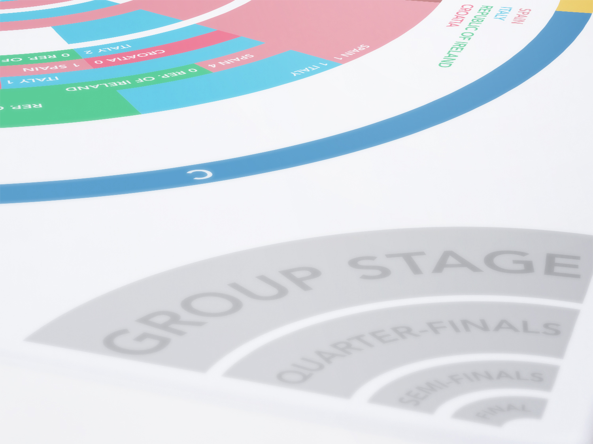

Graphic designer with skills in communication and management of visual language. Planning of projects which involve the spreading of messages through visual environments, either digital or printed. Mainly interested in projects related to web design, usability, information architecture and UX(User Experience). Work experience in the field of virtual education and E-learning. Other interests are branding, brand building, corporate and institutional image, editorial design and photography.
The field of action of a designer always has to be open for the possibilities and expectations of the project which will be realized, therefore my personal focus is versatility in terms of management and planning of processes that contribute to spreading the message clearly through graphic resources in any media.
Skills
Web design - HTML5 and CSS3 development - Usability - User Experience (UX) -
CMS Manage (Content Management System) -
Blackboard E-learning Platform Management -
Branding - Corporate Identity - Photography - Editorial Design.
Software
Adobe Creative Cloud - Brackets (Web design and coding)
Coding Languages
HTML - CSS - JavaScript - Jquery - Angular JS
Bogotá D.C. · Colombia - 3192238587 - mariogbacar@gmail.com

Web Design
Professional job as a graphic designer for Gmedia Company. Design and implementation of Development and design of virtual courses for the Instituto Colombiano de Cancerología. Use of basic languages (HTML, CSS, Javascript, Jquery). Implementation of educational activities.
Editorial Design · Corporate Identity
Work as a volunteer for the United Nations Procurement Division, especifically for the Latin American and Caribbean subsidiary office. Design and development of documents related to Gender Equality on the work environment. Design of other pieces for specific projects.
Corporate Identity
Logotype designed for a financial company. The construction of the distinctive sign and its color (Letter A as a green triangle) is based on the arrows used to indicate the ups and downs on the stock market.

Web Design
Professional job as a freelance graphic designer for Didactic Mediations Area of Universidad EAN. Development and design of virtual courses. Use of basic languages (HTML, CSS, Javascript, Jquery). Implementation of educational activities. Basic video content implemented in After Effects.

Corporate Identity · Print Design
Logotype designed for an Australian-based education consulting agency. Construction of printed and promotional pieces. The icon design is based on the Australian aboriginal painting style which uses dots and circular patterns in its construction. The name of the agency (ALAS), which in spanish means wings, is used as a metaphor on the icon, becoming the distinctive shape.

Photography
Photographs taken in the context of the Blacks and Whites’ Carnival, celebrated in the town of Pasto, department of Nariño (Colombia). Edited with software Adobe Camera RAW. This carnival showcase the tolerance between different races and cultures through games and festivities. Is strongly rotted in the culture of the city, and, as one of its symbols permits to see the warmness of its people. The tradition started sometime during the Spanish rule when the slaves were permitted to party by their masters, who painted their faces in black in support.

Photography
Photographs taken in the Tatacoa Desert, located in the department of Huila (Colombia). Edited with software Adobe Photoshop and HDR process. Being the second biggest arid area in Colombia, this vast desertic land offers different approaches, from Paleontology research or Astronomics until tourism, to connect with the nature.

Web Design · User Experience
Planning, researching and design of a Website as a final degree proyect. Consisted in a whole design process, from the scratch to the final release, of a website which informs people about the services offered by the Bogotá Transport Terminal in terms of public transport. Designed with usability principles, user-experience research and user-tests.
Web Design · Corporate Identity · Editorial Design · Print Design
Professional job as a graphic designer of the Virtual Education Direction of the University. Production of Virtual Learning Objects (VLO) and Virtual Learning Environments (VLE). Development of HTML5 template for VLO. Development of graphical pieces, digital and printed, to support different processes of the institution. Management of BLACKBOARD E-learning platform.

Infographic · Print Design
Infography showing the results of the matches of the Euro 2012 Soccer Tournament. The winner was Spain, defeating Italy on the final and exhibiting a excellent playing style


Corporate Identity · Editorial Design · Print Design
Management of corporate identity of the Centro Suba Shopping Mall. Editorial design of the annual cost report. Development of pieces for a campaign focused in the celebration of the 17th years of the shopping mall.


Corporate Identity · Editorial Design · Print Design
Internship as a degree option. Development and application of the corporate identity of MAZDA in different digital and printed pieces. Development of virtual courses for employees capacitation. Management of MOODLE E-learning platform. As a Japanese Car Manufacturer, MAZDA applies the simplicity in all their products. Through his brand, shows the Japanese culture.
Doing an internship gives the opportunity to apply all the knowledge learned on the University, and permits to learn how the real world is.
Logo Design
Proposal of logotype for an event of university quality management promoted by the National University of Colombia. Its construction is similar to the University Logotype. The idea was show the union of the different departments of the institution and its excellent functioning through an appropriate management.
Corporate Identity · Print Design
Proposal of corporate identity for the 63th National Fair of Zebu celebrated in Bogotá, Colombia in 2010. Its construction derives for the variety of species used in the Cattle raising, also the diverse services that this market offers.
Corporate Identity · Print Design
Proposal of corporate identity for a jewellry shop. The shop was created by two Kogui colombian aboriginals. The name means "sun and moon". The letter shape is based on the handicrafts made by this tribe, as well as the distinctive icon.
Web Design · Corporate Identity · Editorial Design · Print Design
Assistant student for the National Directorate of Graduate Programs of the National University of Colombia. Development of different printed and digital pieces used for the diffusion of the procedures developed by the Direction. Working in a Education Institution gives the responsibility of keep the people well informed, so the job has to be done perfectly, but above all, the people, its opinions and nee dings have to be the focus.

Typography
Construction of a typographic font based on the combination of a serif and a san-serif font. The main purpose was to create a legible typography, highlighting the strongest points of both types of fonts. for example, adding the serifs in the san-serif characters, but without damaging the simplicity of this last one. It might be used both in printed and digital publications.
Corporate Identity
Proposal of corporate identity for the department of Nariño, Colombia. As basis for the construction, were chosen representative symbols of the department: Blacks and Whites’ Carnival and Galeras Volcano. In the development of a brand which represents a city or a country, the most important part is the previous research. This gives the ideas, and eventually the main focus to begin.

Photography
Photographs taken in the Chingaza National Natural Park, located in the department of Cundinamarca in Colombia. This nature reserve has a huge importance for the environment, due to its production of pure water. There is a hydroelectric plant which supplies energy to Bogotá.
Corporate Identity · Print Design · Packaging
Development of corporate identity and packaging design for a medicine to stop smoking. Each type of product uses the Psychology of the color to transmit certain sensations. In this case, the blue color symbolizes the freshness of breathing as soon as is stop smoking. Graphic design for medicine products is an interesting branch for work and innovation.

Corporate Identity · Print Design · Packaging
Development of corporate identity and packaging design for a medicine to stop smoking. Each type of product uses the Psychology of the color to transmit certain sensations. In this case, the blue color symbolizes the freshness of breathing as soon as is stop smoking. Graphic design for medicine products is an interesting branch for work and innovation.
Photography
Photographic project which consisted in depict a song (Vermillion pt. 2 of Slipknot) through images. Experimentation with edition processes. The color of the pictures is due to these were scanned directly from the negative. The strange shapes and waves of the last picture is cause of the same procedure but the scanner was moved intenttionally during the process. Show the meaning of a song in images is a hard work, due to the multiple interpretations that a phrase may have. It is challenging in terms of what technique is wanted to use and how to apply it to represent the essence of the musical piece.

Photography
Photographic project which consisted in depict a song (Don´t Cry of Guns and Roses) through images. Use of human model and illumination effects. Basic disposal in a shoot with illumination: Simple background, two or three lights, a subject and a camera. Work with illumination equipment gives the project new possibilities in terms of the sensations that may be showed to the viewer. The control of the light is essential to produce certain atmospheres.

Photography
Photographic project which consisted in depict a song (Don´t Cry of Guns and Roses) through images. Use of human model and illumination effects. Basic disposal in a shoot with illumination: Simple background, two or three lights, a subject and a camera. Work with illumination equipment gives the project new possibilities in terms of the sensations that may be showed to the viewer. The control of the light is essential to produce certain atmospheres.
Photography
Photographic project which consisted in depict different sensations at the time to play an instrument, as a metaphore, through images of objects builded with guitar strings and draws of hands. Use of illumination effects.
How to use everyday things to show abstract concepts? From the beginning, the project was focused on the use of guitar strings to represents what does it feels like to play an instrument. The use of black and white color gives te project a strange grade of serenity and calm. Imagination and lots of photographs are the price to pay for a positive ending.
Logo Design · Print Design
Development of a logotype for an university magazine focused in typography. Development of promotional poster. Design a typographic poster is a enjoyable experience, due to that letters have recognizable shapes, and they can be used to create new forms and patterns.

Photography
Photographic project which consisted in shoting photos in a day of rain, giving value to the details and the small things. As a first approach to the photographic process, was challenging to manage al the little things involved. At the end it became a valuable result due the learning adquired.